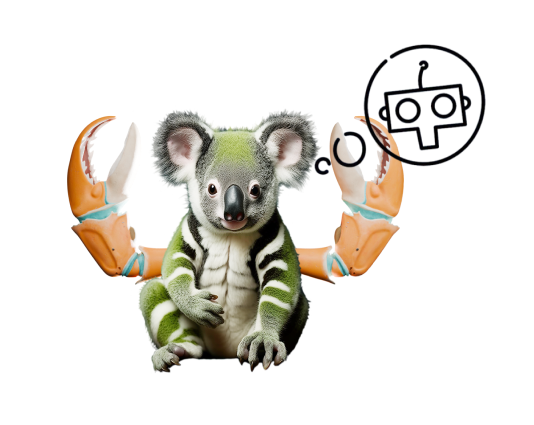
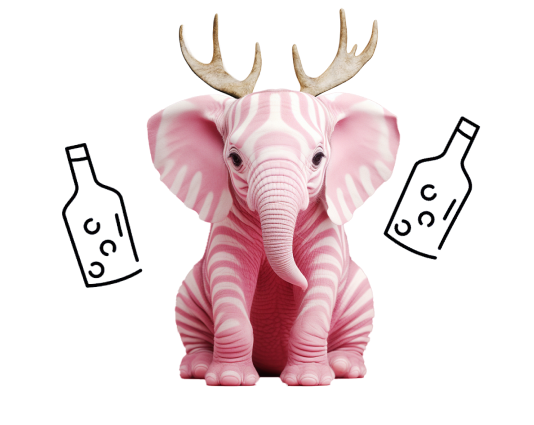
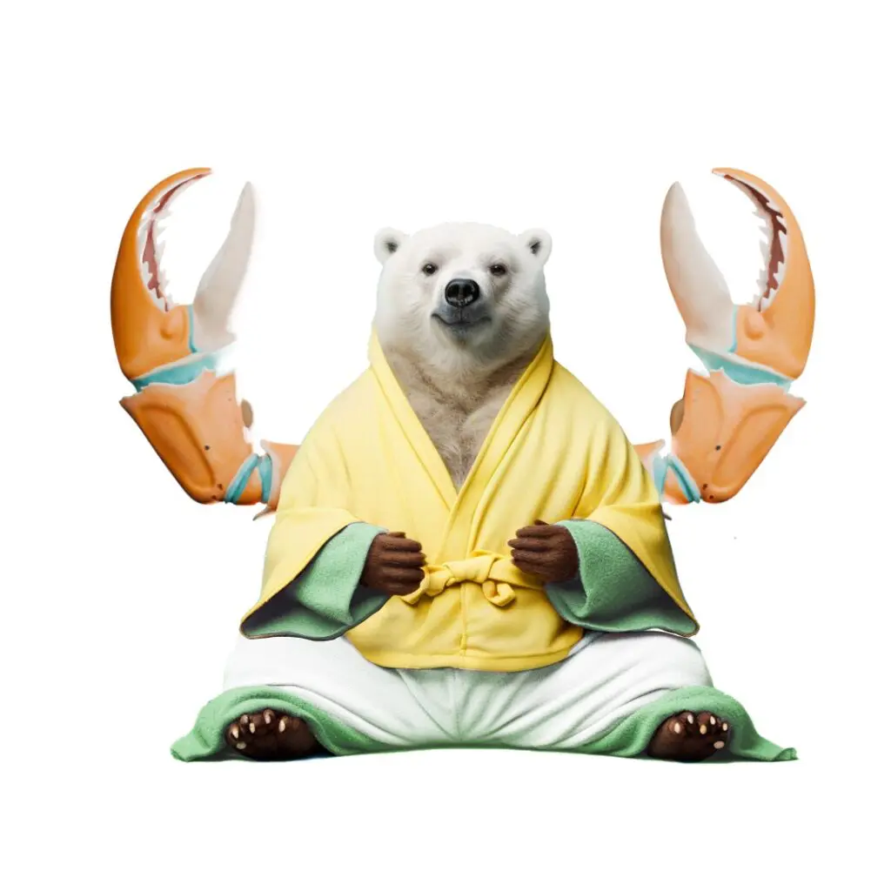
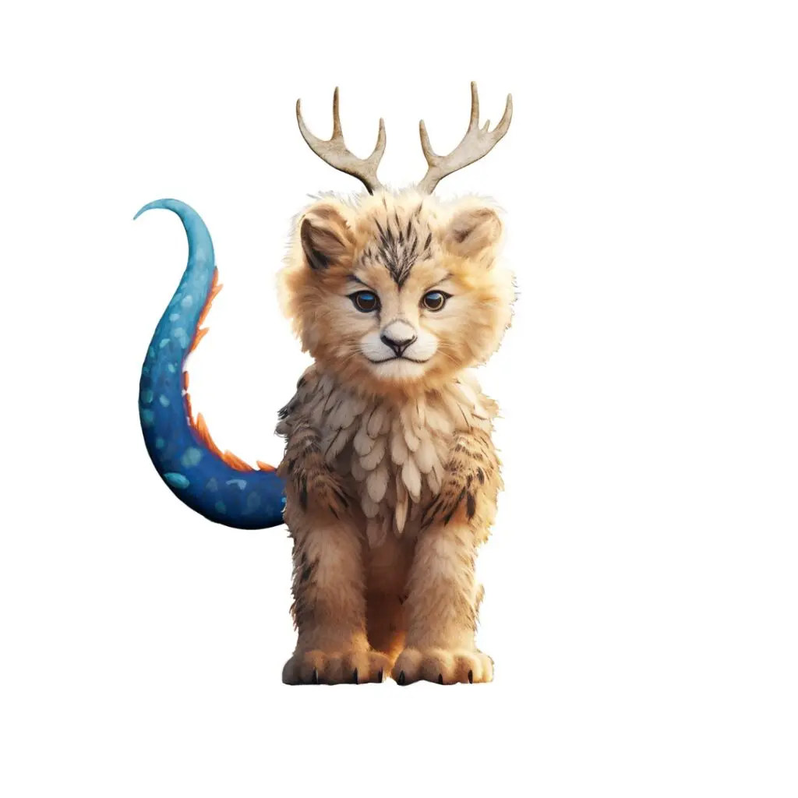
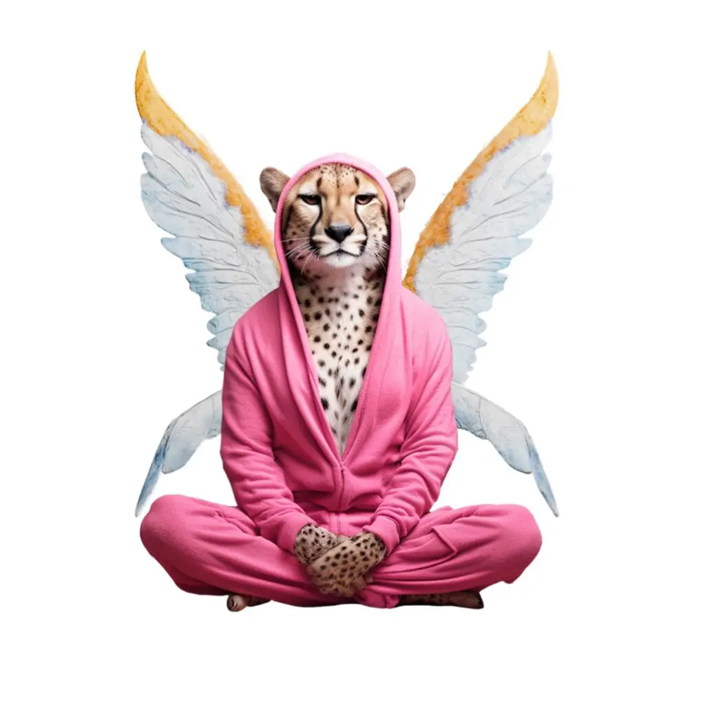

-
Home

Fris en rustig koppie voor het slapen gaan
Fris en rustig koppie voor het
slapen gaan
Slaapproblemen beginnen meestal niet pas als het bedtijd is — ze bouwen zich over de dag op. Een druk lokaal, volle planning, grote emoties… kleine koppies blijven vaak nog lang aanstaan als het licht al uit is. Op deze pagina lees je hoe Super Chill helpt om alle indrukken van de dag rustig te verwerken, zodat kinderen makkelijker kunnen ontspannen — en fijn in slaap kunnen vallen.
Download voor apple Download voor AndroidSpeels
Helpt om rustig af te bouwen
Super Chill biedt simpele en speelse rustmomentjes. Rustige bewegings- en ademhalingsoefeningen of even wegdromen naar een stille plek — precies wat een druk koppie nodig heeft voor het slapengaan.
“Oefeningen zoals die van Super Chill kunnen bijvoorbeeld helpen om beter om te gaan met moeite met inslapen of stressvolle situaties. Het is belangrijk om de app op een ontspannen manier en zonder druk te gebruiken — als ouder of begeleider breng jij de rust en het geduld, met het besef dat het niet meteen perfect hoeft te gaan.”
-
Prof. Dr. Nina Kolleck
Hoogleraar Pedagogiek

Vanavond nog starten? Download de app
120.000+ kids gingen je al voor!
4.7 in de app store


Met zorg gemaakt
Ontwikkeld met experts
Al onze oefeningen om rustig te worden zijn ontwikkeld met de hulp van kinderyoga- en meditatiecoaches en pedagogen. Zacht, veilig en echt afgestemd op kinderen.
Wetenschappelijke onderbouwing
"Een favoriete oefening van Marlene (9 jaar) en mij is de Wensboom. We deden die vaak samen voor het slapengaan. Je stelt je voor dat je onder een boom ligt en aan je grootste wens denkt. Dan komt er een vogeltje dat die wens meeneemt. Marlene vertelde me daarna vaak wat ze had gewenst — zo leerde ik ook weer nieuwe dingen over haar!"
Erik (vader van Marlene)
Veelgebruikte slaap-oefeningen
-

De rustige robot
In deze oefening ben je een robot die zichzelf even helemaal uitzet. En als je helemaal uit staat, kun je fijn slapen. Dit is de perfecte oefening voor als je even niets wil doen. Want niets doen? Dat is het hele idee van deze oefening. Je gebruikt alleen de krachten in je hoofd om kalm te worden. En dan blieb blieb blieb zzzzzz.
Naar oefening
-
Sterrenhemel
Deze oefening heet de Sterrenhemel. Deze oefening kun je elke avond even doen. Het is een goede oefening om de dag mee af te sluiten zodat je straks lekker kunt slapen.
Bekijk oefening
-

Toverdrank
Voor deze magische oefening gebruik je de super powers in je hoofd om jezelf rustig te maken. Ga lekker op de grond liggen. Een dekentje pakken mag. Zorg ervoor dat de tv uitstaat. Hopelijk is de buurvrouw niet aan. En vraag ook even of de hond niet blaft. Alles stil? Luister fijn naar het verhaaltje en zak weg in totale kalmte. Niet in slaap vallen hè! Mag wel hoor.
Bekijk oefening
Ritueel
Dagelijkse routine
Super Chill brengt rust, structuur en een moment om weer even echt contact te maken. Daarmee helpt het kinderen om van een volle dag over te schakelen naar een rustige nacht. Met maar een paar minuten per dag wordt het een fijne gewoonte die helpt om ontspannen de avond in te gaan. Duizenden gezinnen gebruiken Super Chill als onderdeel van hun bedtijdritueel.
-


Emma, 9 jaar
Ik werd er snel rustig van, en dat was echt Super Chill!
-

Pippa, 8 jaar oud
Mama, als ik morgen mijn prik krijg, heb ik dan van tevoren tijd om wat Super Chill-oefeningen te doen? Gisteravond in bed heb ik de hele tijd mijn duim vastgehouden. Ik geloofde niet dat het zou werken, maar het werkte wel.
-


Erik, ouder
Marlene (9 jaar) had 's avonds vaak buikpijn. Toen probeerden we Super Chill, en de oefeningen hielpen echt om beter in slaap te komen -- sindsdien gebruiken we het nog steeds.
Probeer het vanavond
Ontdek de wereld van Super Chill — een ontdekkingstocht vol verfrissende en ontspannende oefeningen, speciaal gemaakt voor kinderen. Begin vandaag nog met een fijne afsluiting van de dag en maak van de avond iets om naar uit te kijken.